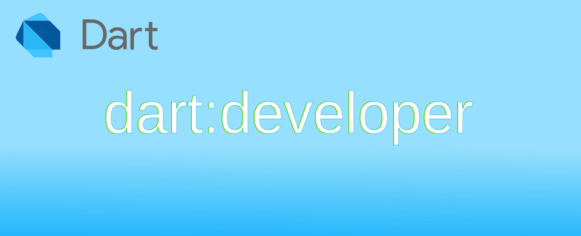

Dart: การใช้งาน dart:developer เพื่อ debug โปรแกรม

ในการพัฒนาแอปด้วยภาษา Dart สามารถใช้ dart:developer เพื่อพิมพ์และบันทึกการทำงานของแอปในส่วนที่ต้องการได้ โดยคำสั่งเหล่านี้จะใช้งานได้เฉพาะตอน debug เท่านั้น เมื่อมีการ compile เพื่อใช้งาน production ตัว Dart จะตัดคำสั่งเหล่านี้ออกไป
พิมพ์ข้อความออกทาง console ด้วยคำสั่ง log()
log() จะใช้พิมพ์ข้อความออกทาง debug console เท่านั้น จะไม่ส่งออกไปยัง std output
void log(
String message, {
DateTime? time,
int? sequenceNumber,
int level = 0,
String name = '',
Zone? zone,
Object? error,
StackTrace? stackTrace,
})
ตัวอย่างการใช้งาน log
หยุดการทำงานตามเงื่อนไขที่กำหนดด้วย debugger()
debugger() เป็นคำสั่งที่ช่วยในการหยุดการทำงานที่ตำแหน่งของคำสั่ง ตามเงื่อนไขที่กำหนด คล้่ายกับการกำหนดจุด break point โดยหากไม่กำหนดเงื่อนไขใด ๆ โปรแกรมจะหยุดเสมอ ใน debugger บางตัวจะรองรับการแสดง message ที่ระบุ
bool debugger({
bool when = true,
String? message,
})
การใช้ debugger() โดยกำหนดเงื่อนไขในการหยุด ผู้ใช้ต้องกด Continue เพื่อให้ทำงานต่อ
การใช้ Timeline class เพื่อตรวจสอบเวลาประมวลผล แบบ synchronous
ในการประมวลผลของแต่ละส่วนของโปรแกรมที่เขียน สิ่งที่ช่วยในการเพิ่มประสิทธิภาพของโปรแกรมที่นิยมกันทั่้วไปคือการติดตามการทำงานในแต่ละส่วนว่าใช้เวลามากน้อยแค่ไหน หากโปรแกรมที่เขียนใช้เวลาหรือตอบสนองแย่ ผู้พัฒนาสามารถเข้ามาตรวจสอบว่าส่วนไหนใช้เวลาทำงานเท่าไหร่ เพื่อให้สามารถปรับปรุงได้ตรงจุด ผ่านคำสั่งใน Timeline class
import "dart:developer";
void testTimeline() async {
Timeline.startSync("Doing Something in 1000ms.");
await Future.delayed(Duration(milliseconds: 1000));
Timeline.finishSync();
}
void main() async {
while (true) {
testTimeline();
await Future.delayed(Duration(seconds: 1));
}
}
ทดสอบโดยการใช้คำสั่งเพื่อ debug และเปิด Dart DevTools debugger
dart run --pause-isolates-on-start --observe .\dart_developer.dart
การเปิดดู Timeline event ใน Dart DevTools
คำสั่ง TimelineTask() รองรับงานย่อยภายใน
หากต้องการดูเวลาในการประมวลผลแบบที่รองรับงานย่อย ๆ ลงไป สามารถใช้คำสั่ง TimelineTask()
TimelineTask({
TimelineTask? parent,
String? filterKey,
})
ตัวอย่างการใช้งานจาก github
Future<void> sendB() async {
final b = TimelineTask();
b.start('B');
await Future.delayed(Duration(milliseconds: 20), () {
b.start('B1');
});
await Future.delayed(Duration(milliseconds: 30), () {
b.start('B2');
});
await Future.delayed(Duration(milliseconds: 50), () {
b.finish();
});
await Future.delayed(Duration(milliseconds: 50), () {
b.finish();
});
await Future.delayed(Duration(milliseconds: 100), () {
b.finish();
});
}
void main() async {
while (true) {
testTimeline();
await Future.delayed(Duration(seconds: 1));
}
}
TimelineTask ที่สามารถงานย่อยภายในได้